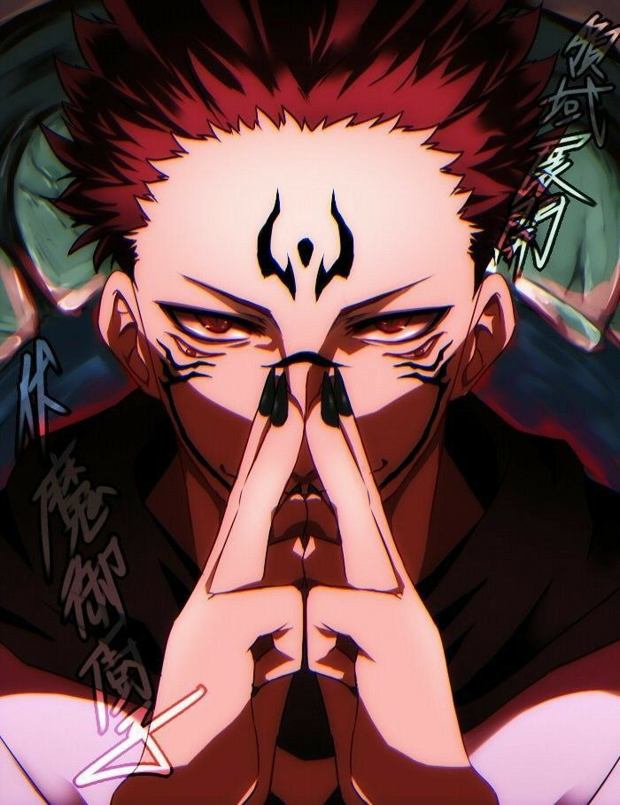

Satoru Gojo é uma raridade, uma anomalia que desequilibra o mundo de Jujutsu Kaizen. Nasceu abençoado com uma união de poderes inacreditáveis, o que lhe rendeu o título de “o mais forte”. Tal posição, para ele, sempre pareceu um fardo. Ser o mais forte também significava ser solitário.Seja no passado, seja no presente, Gojo sempre disse ser o mais forte. Essa certeza sobre sua força, no entanto, revela em seu íntimo sua solidão. Quanto mais só, mais forte ele se sentia. Quanto mais forte, mais só. Especialmente após a morte de seu melhor amigo, enfrentando a lógica do mundo de feiticeiros e tendo que lidar com “velhos burocráticos”, Gojo parecia cada vez mais sozinho em sua jornada.
Ryomei Sukuna

Não diferente de Gojo, Sukuna experimenta sua solidão. Ambos, de formas díspares, mas estranhamente semelhantes, se aproximam, Gojo e Sukuna, da solidão. No passado do Sukuna, podemos ver um pequeno vislumbre desse assunto. Yorozu percebe nele um olhar solitário, uma alma desamparada, de alguma forma.Sukuna também experimenta a solidão, do mesmo tipo de Gojo. Ser forte significa estar distante, desassociado, sozinho. Em outra passagem, enquanto Gojo ainda estava selado, Shoko, sua amiga, relembra algumas de suas palavras. Saber de tudo isso é importante para compreender o contexto e o tema dos dois personagens, bem como suas escolhas e, consequentemente, suas conclusões.